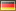

Abstract form
Forma abstracta
Forme abstraite
Abstracte vorm
A representation of a lexical entry that should not be considered canonical. This is primarily from a linguistic view for non-realisable forms such as stems but may also include misspellings and other unusual forms
Range: Form
Domain: Lexical Entry
Subproperty of: Lexical Form
Alternative Referenz von
Alternative reference of
Referencia alternativa de
Référence alternative de
Alternatieve referentie van
The sense of a non-preferred but admissible lexicalization of a given ontology entity
Range: Lexical Sense
Subproperty of: Is Reference Of
Breiter
Broader
Más amplio
Plus large
Breder
Denotes that one sense is broader than another. From a lexical point of view this means replacing one lexical entry with another generalizes the meaning of the phrase. From an ontological point of view this property makes not strong assertions. From a mapping point of view if the broader sense applies the narrower sense must also
Domain: Lexical Sense
Range: Lexical Sense
Kanonische Form
Canonical form
Forma canónica
Forme canonique
Canonieke vorm
The canonical ("dictionary") form of the lexical entry. This can be used to indicate the "lemma" form of a lexical entry
Range: Form
Domain: Lexical Entry
Subproperty of: Lexical Form
Bedingung
Condition
Condición
Condition
Voorwaarde
Indicates an evaluable test, the is necessary for this sense to apply
Range: Lexical Condition
Domain: Lexical Sense
Konstituent
Constituent
Constituyente
Constitutif
Constituent
Domain: Node
Range: Node Constituent
Kontext
Context
Contexto
Contexte
Context
Denotes the pragmatic or discursive context of a sense mapping or a constraint on the mapping by syntactic or semantic properites
Range: Lexical Context
Domain: Lexical Sense
Dekompositum
Decomposition
Descomposición
Décomposition
Decompositie
Denotes a component of a lexical entry
Range: Component List
Domain: Lexical Entry
Definition
Definition
Definición
Définition
Definitie
Indicates a natural language definition. Note there is a pseudo-node to allow for further description of the definition (e.g., source, creation date etc.). The value property should be used to indicate the string value of the definition.
Domain: Lexical Sense
Range: Sense Definition
Kante
Edge
Arista
Lien
Lijn
Denotes the relation between a node in a multi-word expression structure and an edge
Range: Node
Domain: Node
Element
Element
Elemento
Elément
Element
Denotes the lexical entry represented by the component
Domain: Component
Range: Lexical Entry
Eintrag
Entry
Entrada
Entrée
Item
Indicates an entry in a lexicon
Range: Lexical Entry
Domain: Lexicon
Äquivalent
Equivalent
Equivalente
Equivalent
Equivalent
Indicates that two senses are equivalent. From a lexical point of view , this indicates that the lexical entries can be substituted for each other with no change in meaning. From an ontological point of view it means that the two references are not disjoint. From a mapping point of view it means if one mapping apply the other must necessarily apply
Range: Lexical Sense
Domain: Lexical Sense
Subproperty of: Sense Relation
Äußerliche Argument
Extrinsic argument
Argumento extrínseco
Actant extrinsèque
Extrinsiek argument
A raisable semantic argument is not in fact the semantic argument of the current frame-sense but instead is "raised" into a frame-sense used for an argument. For example the phrase "John seemed to be happy", is interpreted as "it seemed that X" where X is "John is happy", hence the subject of "seem" is a raisable argument.
Subproperty of: Semantic Argument
Form-Variante
Form variant
Variante de la forma
Variante de la forme
Vorm variant
Domain: Form
Range: Form
Erzeugt
Generates
Genera
Génère
Genereert
Domain: Morphological Transform
Range: Prototype
Inkompatibel
Incompatible
Incompatible
Incompatible
Onverenigbaar
Says that the two senses are disjoint. From a lexical point of view, this means substituting the lexical entries must change the meaning of the phrase. From an ontological point of view, this property is implied if both references are also disjoint, but does not imply disjointness, but non-equivalence of the references. For the mapping point of view there is not instance when both mappings are valid.
Range: Lexical Sense
Domain: Lexical Sense
Subproperty of: Sense Relation
Instanz von
Instance of
Instancia de
Instance de
Instantie van
Denotes the the single argument of a class predicate is represented in the lexicon by the given semantic argument. That is Class(?x) or ?x rdf:type Class
Subproperty of: Semantic Argument
Referenz von
Reference of
Referencia de
Référence de
Referentie van
Indicate that a reference has a given sense
Range: Lexical Sense
Inverse of: reference
Sinn von
Sense of
Acepción de
Signfication de
Zin van
Indicate that a sense is realised by the given lexical entry
Range: Lexical Entry
Domain: Lexical Sense
Inverse of: sense
Blatt
Leaf
Hoja
Feuille
Blad
Denotes the component referred to by the lex (pre-terminal) of the phrase structure
Domain: Node
Range: Phrase element
Lexikalische Form
Lexical form
Forma léxica
Forme lexicale
Lexikaal vorm
Denotes a written representation of a lexical entry
Range: Form
Domain: Lexical Entry
Lexikalische Variante
Lexical variant
Variante léxica
Variante lexicale
Lexikaal variant
Indicates a non-semantic relationship between two lexical entries. E.g., a term is derived from another term, such as "lexical" and "lexicalize"
Range: Lexical Entry
Domain: Lexical Entry
Marker
Marker
Marcador
Marqueur
Merker
Denotes the marker of a semantic argument. This should generally either be a semantic property i.e., case or another lexical entry e.g., a preposition or particle
Domain: Argument
Range: Syntactic Role Marker
Enger
Narrower
Más estrecho
Plus restreint
Enger
Denotes that one sense is broader than another. From a lexical point of view this means replacing one lexical entry with another specializes the meaning of the phrase. From an ontological point of view this property makes not strong assertions. From a mapping point of view if the broader sense applies the narrower sense must also
Range: Lexical Sense
Domain: Lexical Sense
Subproperty of: Sense Relation
Folgende Transformation
Next transform
Transformación siguiente
Transformation suivante
Volgende transformatie
Domain: Morphological Transform
Range: Morphological Transform
Objekt von Prädikat
Object of property
Complemento de la propiedad
Complément de la propiété
Object van predikaat
Indicates the semantic argument with represents the objects (ranges) of the property referred to by this sense
Range: Argument
Domain: Lexical Sense
Subproperty of: Semantic Argument
Andere Form
Other form
Otra forma
Autre forme
Andere vorm
A non-preferred ("non-dictionary") representation of a lexical entry. This should be variant that is either a morphological variant, an abbreviation, short form or acronym
Range: Form
Domain: Lexical Entry
Subproperty of: Lexical Form
Phrasewurzel
Phrase root
Raíz del sintagma
Base de la syntagme
Zinsdeel wortel
Indicates the head node of a phrase structure or dependency parse graph
Domain: Lexical Entry
Range: Node
Bevorzugte Referenz von
Preferred reference of
Referencia preferida de
Référence préféré de
Voorkeursreferentie van
The sense of the preferred lexicalization of a given ontology entity
Range: Lexical Sense
Subproperty of: Is reference of
Lexikalische Prädikat
Lexical property
Propiedad léxica
Propiété lexicale
Lexikaal predikaat
Denotes a lexical property of a lexical entry, form, component or MWE node. For the lexical entry this is assumed to be static properties e.g., part of speech and gender and for the others this is assumed to be specific properties e.g., case, number
Domain: Lemon Element
Range: Property Value
Prädikatsbereich
Property domain
Dominio de la propiedad
Ensemble de la propiété
Domein van het predikaat
Indicates a restrictions on the domain of the property. That is, this sense only applies if the property the sense refers to has a subject in the class referred to by this property
Domain: Lexical Sense
Subproperty of: Condition
Prädikatszielmenge
Property range
Rango de la propiedad
Image de la propiété
Bereik van het predikaat
Indicates a restrictions on the range of the property. That is, this sense only applies if the property the sense refers to has a object in the class referred to by this property
Domain: Lexical Sense
Subproperty of: Condition
Referenz
Reference
Referencia
Référence
Referentie
A reference to an external resource
Domain: Lexical Sense
Semantische Argument
Semantic argument
Argumento semántico
Actant sémantique
Semantisch argument
Denotes a semantic argument slot of a semantic unit
Range: Argument
Domain: Lexical Sense
Sinn
Sense
Acepción
Signification
Zin
Indicates the sense of a lexical entry
Domain: Lexical Entry
Range: Lexical Sense
Sinn-Relation
Sense relation
Relación de Acepción
Relation de Signification
Zin relatie
Denotes a relationship between senses
Range: Lexical Sense
Domain: Lexical Sense
Subjekt von Prädikat
Subject of property
Sujeto de la propiedad
Sujet de la propiété
Onderwerp van predikaat
Indicates the semantic argument with represents the subjects (domain) of the property referred to by this sense
Range: Argument
Domain: Lexical Sense
Subproperty of: Semantic Argument
Teil des Sinnes
Subsense
Parte del acepción
Signification composante
Deel van de zin
Indicates that the relation between a compound sense and its atomic subsenses
Range: Lexical Sense
Domain: Lexical Sense
Syntactische Argument
Syntactic argument
Argumento sintáctico
Actant syntaxique
Syntactisch argument
Indicates a slot in a syntactic frame
Range: Argument
Domain: Frame
Syntactische Verhalten
Syntactic behavior
Funcionamiento sintáctico
Conduite syntaxique
Syntactisch optreden
Indicates a syntactic behavior of a lexical entry
Range: Frame
Domain: Lexical Entry
Thema
Topic
Tema
Thème
Thema
Indicates the topic of the overrall lexicon, this is property is sometimes called "subject field". Note that in addition to the topic of a lexicon each lexical entry may belong to a given domain, this can be modelled as equal or not equal to the topic of the associated lexicon
Range: Lexical Topic
Domain: Lexical Entry and Lexicon
Transformation
Transform
Transformación
Transformation
Transformatie
Domain: Morphological Pattern
Range: Morphological Transform
Sprache
Language
Lengua
Langue
Taal
The language of a given lexicon. This should be some ISO-639 string
Domain: Has Language
Range: string
Optional
Optional
Opcional
Optionnel
Optionele
Denotes that the syntactic argument is optional (may be omitted)
Domain: Argument
Range: boolean
Darstellung
Representation
Representación
Représentation
Voorstelling
A realisation of a given form
Domain: Form
Range: string
Separator
Separator
Separador
Séparateur
Afscheider
Indicates the graphical element used to seperate the subnodes of this phrase structure. It is generally recommended that you use a string value with the language tag used to indicate script, (i.e., using ISO-15924 codes, such as "Latn"), as orthographic features may change with script.
Domain: Node
Range: string
Wert
Value
Valor
Valeur
Waarde
This indicates the value of a pseudo-data node. An example of this is definition where the value would generally be a string but it would not be possible to add further annotations, such as source or creation date.
Schriftliche Darstellung
Written representation
Representación escrita
Représentation écrite
Schriftelijke voorstelling
Gives the written representation of a given form
Domain: Form
Subproperty of: representation
Range: string
Argument
Argument
Argumento
Actant
Argument
Subclass of: Lemon Element
Subclass of: Phrase Element
Disjoint with: Component
Disjoint with: Form
Disjoint with: Frame
Disjoint with: Lexical Entry
Disjoint with: Lexical Sense
Disjoint with: Lexicon
Disjoint with: Node
Disjoint with: Property Value
Disjoint with: Sense Definition
Disjoint with: Syntactic Role Marker
Disjoint with: Usage Example
A slot representing a gap that must be filled in realising a lexical entry in a given projection
Komponente
Component
Componente
Composant
Bestanddeel
Subclass of: Lemon Element
Subclass of: Phrase Element
Subclass of: element max 1
Disjoint with: Form
Disjoint with: Frame
Disjoint with: Lexical Entry
Disjoint with: Lexical Sense
Disjoint with: Lexicon
Disjoint with: Node
Disjoint with: Property Value
Disjoint with: Sense Definition
Disjoint with: Syntactic Role Marker
Disjoint with: Usage Example
A constituent element of a lexical entry. This may be a word in a multi-word lexical element or a constituent of a compound word
Subclass of: List
Subclass of: rest exactly 1
Subclass of: rest only (ComponentList or { nil } )
Subclass of: first exactly 1
Subclass of: first only Component
A node within a list of components. This should generally be a blank node,see rdf:List
Form
Form
Forma
Forme
Vorm
Subclass of: Lemon Element
Subclass of: representation min 1
Disjoint with: Frame
Disjoint with: Lexical Entry
Disjoint with: Lexical Sense
Disjoint with: Lexicon
Disjoint with: Node
Disjoint with: Property Value
Disjoint with: Sense Definition
Disjoint with: Syntactic Role Marker
Disjoint with: Usage Example
A given written or spoken realisation of a lexical entry
Rahmen
Frame
Marco
Cadre
Raam
Subclass of: Lemon Element
Disjoint with: Lexical Entry
Disjoint with: Lexical Sense
Disjoint with: Lexicon
Disjoint with: Node
Disjoint with: Property Value
Disjoint with: Sense Definition
Disjoint with: Syntactic Role Marker
Disjoint with: Usage Example
A stereotypical example of the usage of a given lexical entry. The most common example of projections are subcategorization frames which describe the slots taken by the arguments of a verb.
Subclass of: Lemon Element
Structural element for all elements that can be tagged with a language
Lexikonbedingung
Lexical Condition
Condición léxica
Condition lexicale
Lexikaal Voorwaarde
Subclass of: Lemon Element
An evaluable condition on when a sense applies.
Lexikonkontext
Lexical Context
Contexto léxico
Contexte lexical
Lexikaal Context
Subclass of: Lemon Element
Indicates the pragmatic or discourse context in which a sense applies
Lexikoneintrag
Lexical entry
Entrada léxica
Entrée lexicale
Lexikaal item
Subclass of: Has Language
Subclass of: Has Pattern
Subclass of: Lemon Element
Subclass of: lexicalForm min 1
Subclass of: canonicalForm max 1
Disjoint with: Lexical Sense
Disjoint with: Lexicon
Disjoint with: Node
Disjoint with: Property Value
Disjoint with: Sense Definition
Disjoint with: Usage Example
An entry in the lexicon. This may be any morpheme, word, compound, phrase or clause that is included in the lexicon
Lexikonsinn
Lexical sense
Acepción léxica
Signification lexicale
Lexikaal zin
Subclass of: Lemon Element
Subclass of: (subsense min 1) or (reference min 1)
Disjoint with: Lexicon
Disjoint with: Node
Disjoint with: Property Value
Disjoint with: Sense Definition
Disjoint with: Syntactic Role Marker
Disjoint with: Usage Example
Represents the intersection in meaning between the lexical entry and the ontology entity. This is used as the ontology entity and lexical entry may not be in one-to-one correspondence as such the existence of a sense between them states meerly that there are some cases when this lexical entry refer to the ontology entity and vica versa. Mapping elements can be used to further specify this relation
Lexikonthema
Lexical Topic
Tema léxica
Thème lexicale
Lexikaal Thema
Subclass of: Lemon Element
Indicates the topic of a lexicon or a lexical entry
Lexikon
Lexicon
Lexicón
Lexique
Lexicon
Subclass of: Has Language
Subclass of: Has Pattern
Subclass of: Lemon Element
Subclass of: entry min 1
Subclass of: language exactly 1
Disjoint with: Node
Disjoint with: Property Value
Disjoint with: Sense Definition
Disjoint with: Syntactic Role Marker
Disjoint with: Usage Example
The lexicon object. This object is specific to the given language and/or domain it describes
Morphologische Muster
Morphological pattern
Patrón morfológico
Patron morphologique
Morphologisch Patroon
Subclass of: Has Language
Subclass of: Lemon Element
Morphologische Transformation
Morphological Transform
Transformación morfológica
Transformation morphologique
Morphologisch transformatie
Subclass of: Lemon Element
Knoten
Node
Vértice
Nœud
Punt
Subclass of: Lemon Element
Subclass of: (edge min 1) or (leaf min 1)
Disjoint with: Property Value
Disjoint with: Sense Definition
Disjoint with: Syntactic Role Marker
Disjoint with: Usage Example
A node in a phrase structure or dependency parse graph
Konstituent
Constituent
Constituyente
Constituent
Constituent
Subclass of: Lemon Element
The class of constituents, that is types applied to nodes in a phrase structure graph
Wortteil
Part of word
Parte de la palabra
Partie du mot
Deel van een woord
Subclass of: Lexical Entry
An affix is a morpheme that is attached to a word stem to form a new word. Use this for lexical entries with only abstract forms
Phrase
Phrase
Sintagma
Syntagme
Zinsdeel
Subclass of: Lexical Entry
Subclass of: decomposition min 1
Phrase-Element
Phrase element
Elemento del sintagma
Elément du syntagme
Zinselement
Subclass of: Lemon Element
A terminal node in a phrase structure graph, i.e., a realisable, lexical element.
Prädikatswert
Property Value
Valor de la propiedad
Valeur de la propriété
Waarde van het predikaat
Subclass of: Lemon Element
Disjoint with: Sense Definition
Disjoint with: Usage Example
A value that can be used in the range of linguistic property
Bedingung
Condition
Condición
Condition
Voorwaarde
Subclass of: Lemon Element
Indicates a logical condition that is used indicate when a particular term has the given meaning
Kontext
Context
Contexto
Contexte
Context
Subclass of: Lemon Element
Indicates the context in which a term is to be used. The context refers not to the immediate syntactic context, but the document and register the document is used in
Definition
Definition
Definición
Définition
Definitie
Subclass of: Lemon Element
Subclass of: value min 1
Disjoint with: Syntactic Role Marker
Disjoint with: Usage Example
A definition of a sememe, that is the a text describing the exact meaning of the lexical entry when its sense is the given ontology reference
Syntactische Rolle-Marker
Syntactic role marker
Marcador de la función sintáctica
Marqueur du rôle syntaxique
Syntactisch rol merker
Subclass of: Lemon Element
Subclass of: LexicalEntry or PropertyValue
Disjoint with: Usage Example
The indicator of a given syntactic argument, normally a preposition or other particle marker or a linguistic property such as case
Anwendungsbeispiel
Usage Example
Ejemplo de uso
Exemple d'utilisation
Voorbeeld van het gebruik
Subclass of: Lemon Element
Subclass of: value min 1
An example of the usage of a lexical entry when refering to the ontology entity given by the sememe's reference. This should in effect be an example of the form used in context. E.g., "this is a *usage example*"
Wort
Word
Palabra
Mot
Woord
Subclass of: Lexical Entry
A word is a single unit of writing or speech. In languages written in Latin, Cyrillic, Greek, Arabic scripts etc. these are assumed to be separated by white-space characters. For Chinese, Japanese, Korean this should correspond to some agreed segmentation scheme.